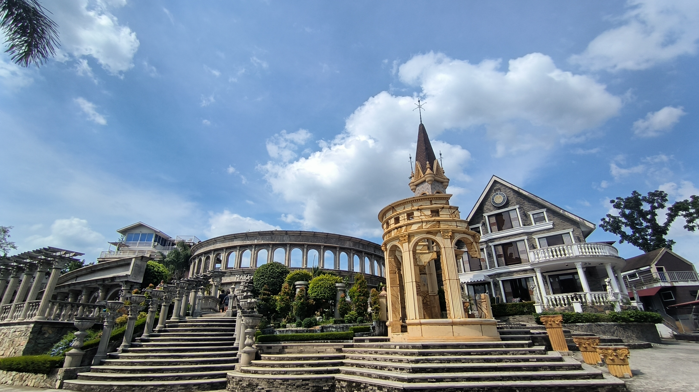
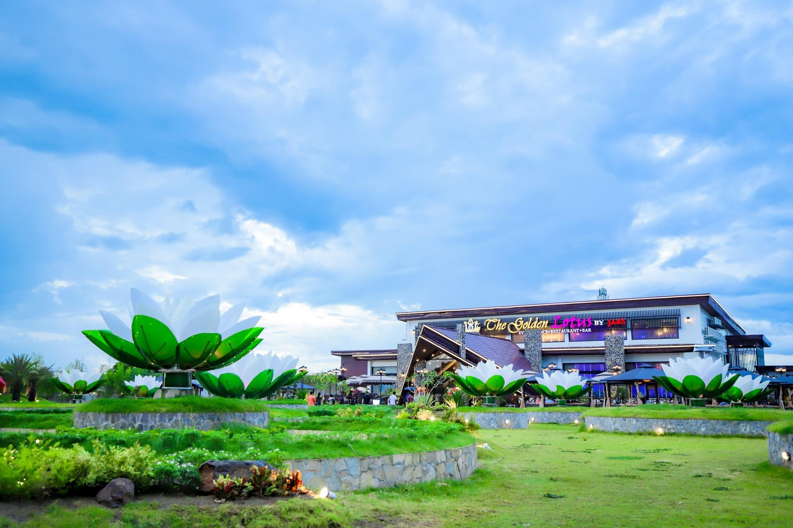
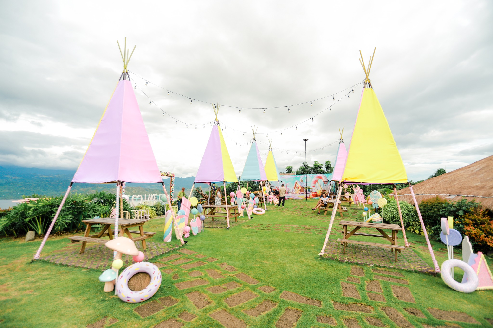
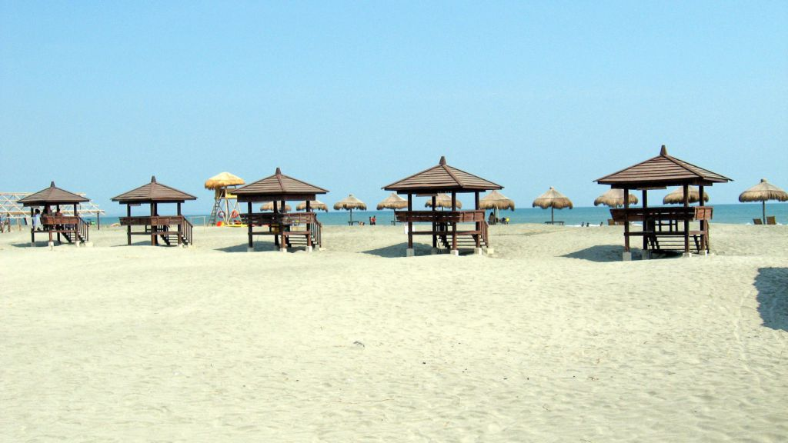

Discover the World, One Adventure at a Time
Join me as I explore hidden gems, breathtaking landscapes, and unforgettable experiences.
Featured Adventures

A Little Taste of Rome in Tarlac
Discover the tranquil beauty of Goshen in Bamban, Tarlac—far beyond the typical tourist spots. This hidden gem will leave you mesmerized.
Join the Journey

Discovering the Quiet Beauty of Jabs
Take a peaceful escape to Jabs Resort in Nueva Ecija, a place where time slows down and every corner is filled with nature's beauty.
Read More

Exploring Lake Farm de La Marre
A tranquil journey through the serene beauty of Lake Farm, a place that feels like an untouched paradise waiting to be discovered.
Dive Into the Adventure

The Road Less Traveled in Lingayen
Join me on a road trip to the secluded shores of Lingayen Beach, where you'll find stunning views and fascinating stories off the beaten path.
Continue the Journey